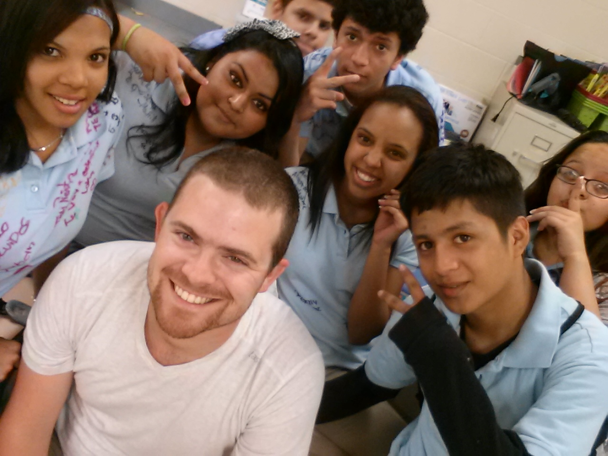
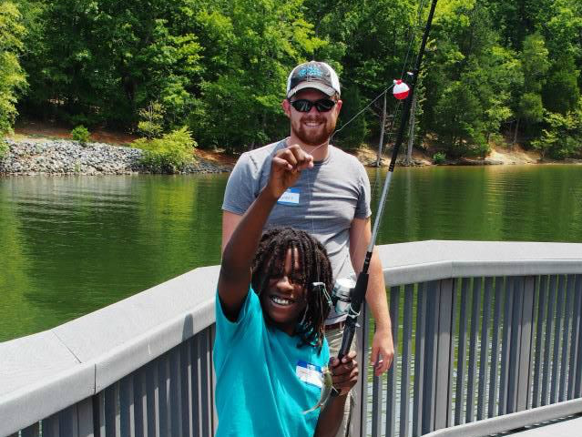
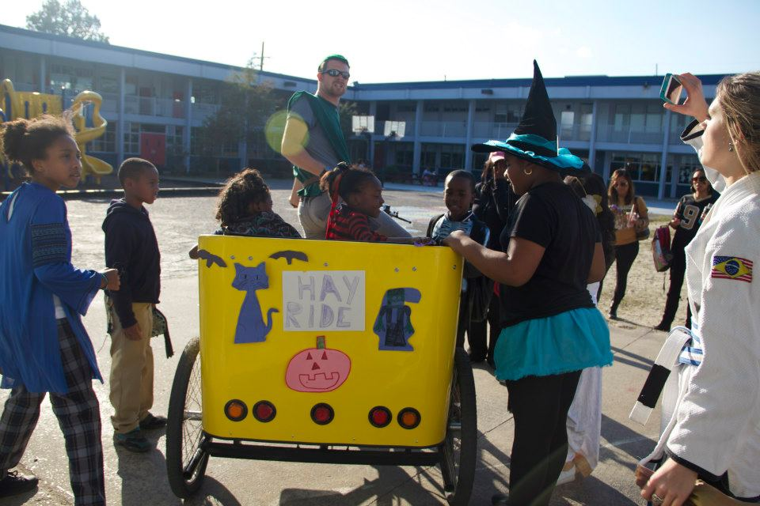
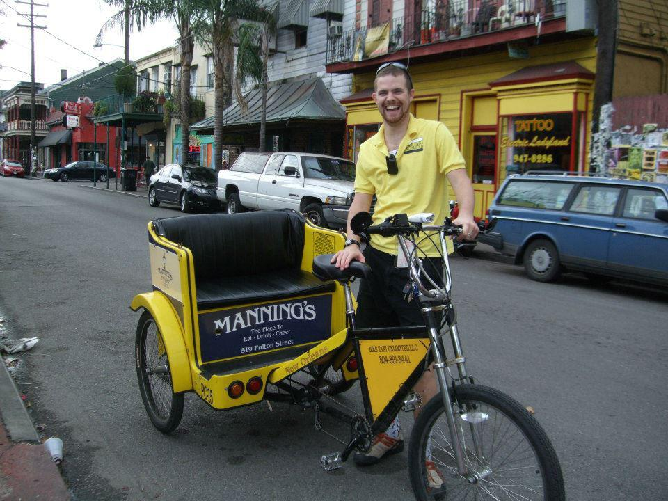
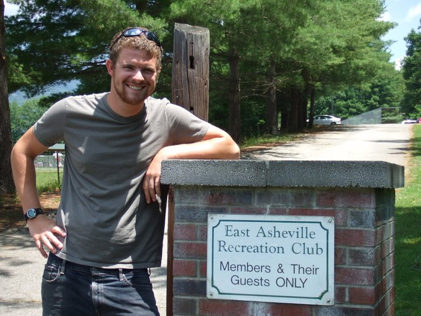

-
Student Developer | Coder Foundry

This year I enrolled in a 12-week bootcamp to learn practical skills in .NET development. In a rapidly expanding field, where it can be hard to find talented coders, I will come to your organization with a wealth of knowledge and know how.
- Web Design
- JavaScript, JQuery
- C#, AngularJS
- MS SQL Server
- MS Visual Studio
-
Teacher | Charlotte-Mecklenburg Schools
Served a very memorable two and a half years as an 8th grade English as a second language instructor in a Title I middle school in Charlotte, NC.
- Designed, planned, and implemented daily Common Core aligned instruction in a Title I middle school.
- Primarily served students of Limited English Proficiency (LEP) in order to accommodate their status as non-native English speakers.
- Supervised classrooms of 30+ students and implemented effective classroom management in order to maximize student engagement.
- Thrived in a high stress, high accountability environment.
-
Great Outdoors Trip Leader | NC Wildlife Federation
During my summers off from teaching, I stayed very busy by leading outdoor experiences for the North Carolina Wildlife Federation. Everything from wildlife identification to experiential learning, and my favorite: fishing.
- Guided and supervised outdoor education experiences for area youth organizations.
- Educated groups using experiential learning principles.
- Led and managed groups of up to 15 participants at a time with diverse backgrounds and skill levels.
- Strived to ensure safety and enjoyment of all activities by all participants.
-
Lego Robotics Instructor | Partnership for Youth Development
The job that sparked my interest in teaching, and was somewhat of a child hood dream come true.
- Provided supervision and instruction for the CP3 Afterschool Zone program at KIPP Central City charter school.
- Implemented Lego Robotics curriculum for approximately 8hrs. per week.
- Created and submitted detailed lesson and unit plans to the CP3 director.
- Supported KIPP culture through appropriate behavior management techniques.
-
Pedicab Operator | Bike Taxi Unlimited
The best job I've ever had. This is where I learned self-reliance, how to hustle, and how to sell myself.
- Operated a for-hire pedicab (bicycle rickshaw) in the Downtown, French Quarter, and Marigny districts of the city of New Orleans, LA.
- Provided taxi, chauffeur, sightseeing, grocery and shopping services to both tourists and locals alike, rain or shine.
-
Assistant Manager | East Asheville Recreation Club
My first job with real responsibility. I acquired the essentials to managing a team of individuals of whom I was the role-model and leader.
- 4
- Planned and implemented programs and events, including swim lessons, private and community parties and celebrations, countywide swim meets, and adult water exercise classes for three consecutive summers.
- Responsible for the grounds of the East Asheville Recreation Club including aquatics facilities, tennis courts, playground, picnic areas, and snack bar.
- Managed lifeguards and concession stand staff, supervising up to eight individuals at a time in a challenging and high-tension environment.
- Planned and led staff meetings and in-service training for lifeguards.
- Revised and implemented full risk management plan for entire facility.
-
BS Recreation Management | Appalachian State University
- Bachelor of Science in Recreation Management, Graduated Cum Laude December 18, 2011
- Recreation and Park Management Concentration with a focus area on community recreation